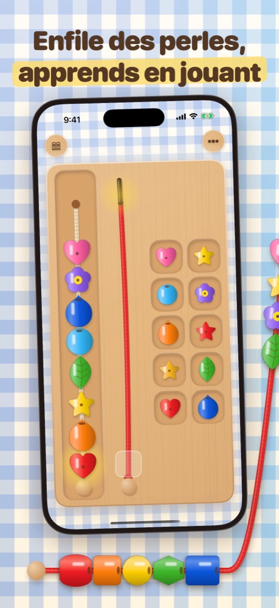
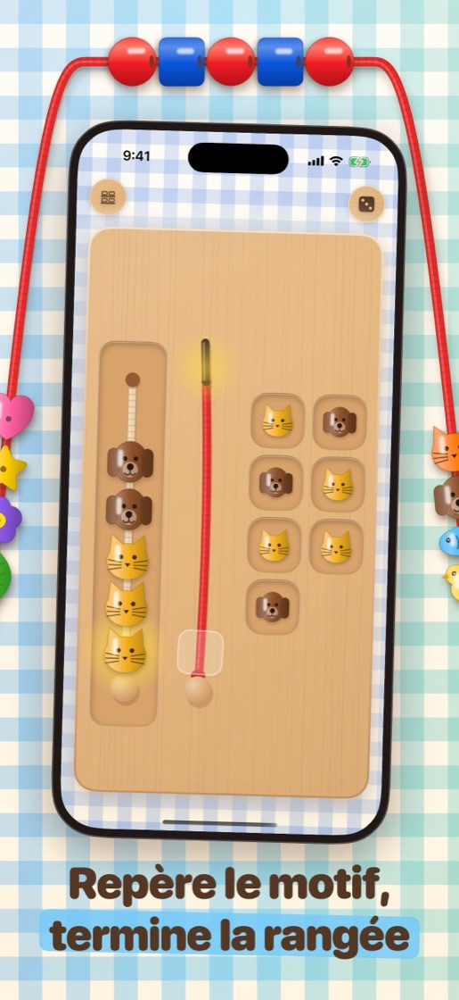
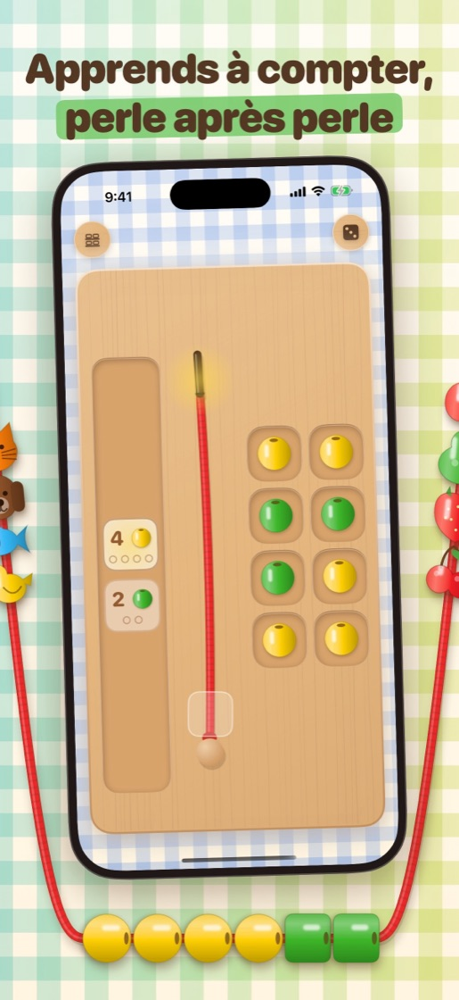
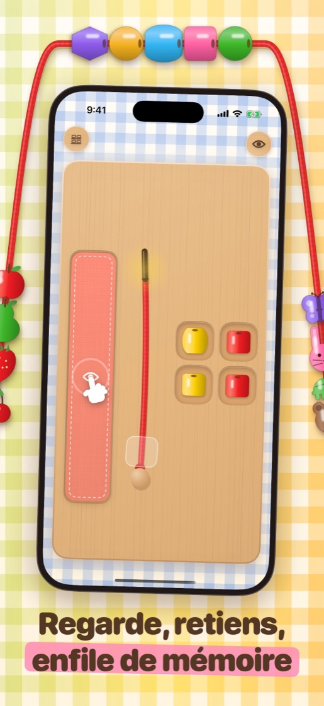
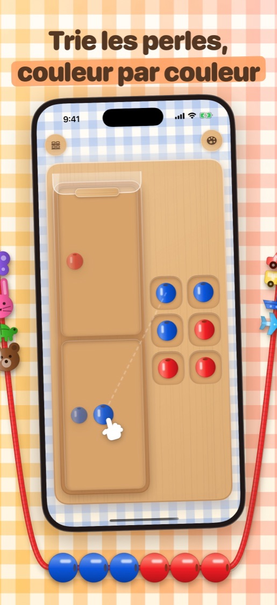
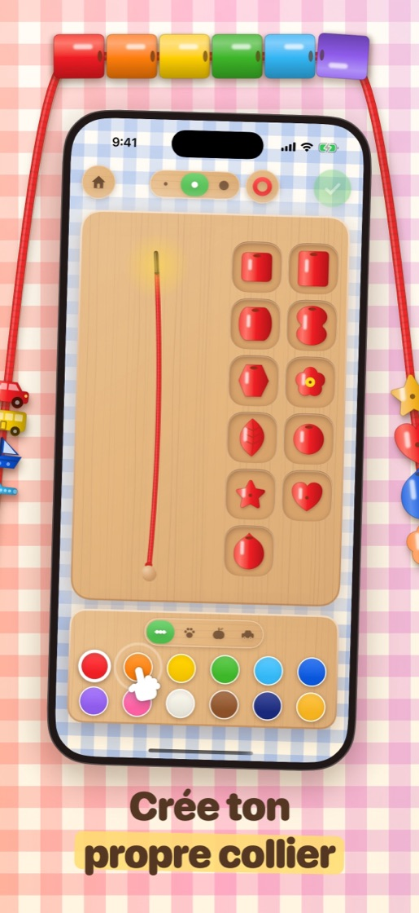
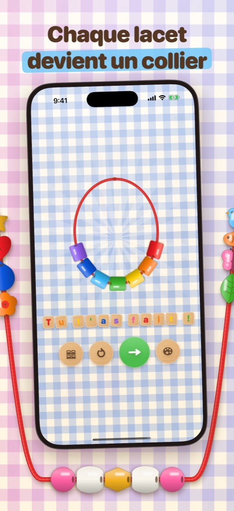
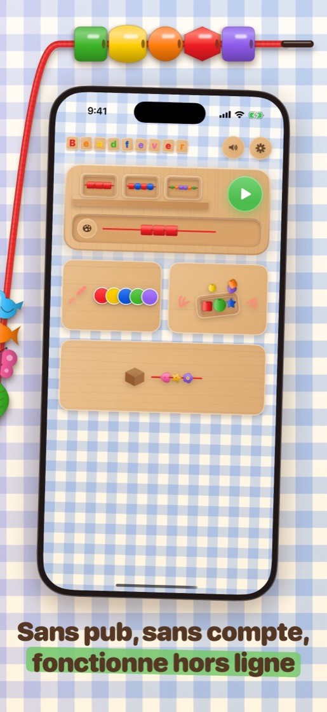

De vrais matériaux
Des perles en bois peintes, un lacet rouge tressé à embout rigide, un arrêt en bois. La couleur a du sens ; rien n'est là pour décorer.
L'enfilage de perles Montessori pour les petites mains
Prends une perle en bois, amène-la au bout du lacet et regarde-la glisser. Reproduis le modèle perle après perle et crée ton propre collier.
Téléchargement gratuit · iPhone et iPad
Beadfever s'inspire des perles à enfiler en bois présentes dans chaque classe Montessori. Un seul plateau en bois réunit tout : le lacet modèle à gauche, celui de l'enfant au centre et le plateau de perles à droite. Chaque perle s'aligne avec sa jumelle du modèle : reproduire devient naturel.
Pas de points, d'étoiles ni de chrono. Une mauvaise perle retourne simplement dans le plateau et la bonne brille un instant dans le modèle. Quand le lacet est plein, l'enfant voit le collier qu'il a fait. C'est la récompense.








Des perles en bois peintes, un lacet rouge tressé à embout rigide, un arrêt en bois. La couleur a du sens ; rien n'est là pour décorer.
Le matériel montre lui-même l'erreur : la perle revient et le modèle brille. L'enfant le remarque et corrige sans être grondé.
Pas d'étoiles, de scores ni de séries. Terminer montre le collier de l'enfant ; recommencer ou continuer, c'est son choix.
Les activités attendent sur des étagères ouvertes, de la plus facile à la plus difficile. Celles pas encore présentées montrent des perles en bois brut.
Chaque étape isole une difficulté, puis les combine.
Jeu libre : choisis une couleur, n'importe quelle forme ou animal et enfile ton collier. Touche la dernière perle pour la retirer.
Chaque activité terminée et chaque collier de l'atelier y est gardé : la collection de l'enfant.
Ni but ni score : lâcher des perles, incliner et secouer, tendre les élastiques et rassembler les perles avec l'aimant.
Choisis cinq perles de n'importe quelle forme et couleur, ouvre la porte et regarde-les rouler sur la piste à chevilles jusqu'aux creux numérotés de 1 à 5. Sans points et sans perdant.
Dans la version complète, certaines perles ont leur propre son doux et leur traînée : l'avion laisse des traits de vent, la voiture souffle de la fumée, le train lâche de la vapeur, le chat miaule.
Un adulte prépare la suite, l'enfant l'enfile. Les préférées se gardent sur l'étagère.
« Cube, rouge ; tonneau, jaune… » – la suite est lue dans la langue de l'enfant.
Des figurines plates en bois peint – poisson, oiseau, tortue, ours, chat et chien, ainsi que des perles fruits et véhicules – sur l'étagère et dans l'atelier.
Environ de 2 à 6 ans. Pour les plus petits, choisissez « Facile » dans les réglages : cible plus grande et aimant plus fort au bout du lacet.
Non. Tout, y compris la lecture à voix haute, fonctionne hors ligne.
La pédagogie Montessori évite les récompenses extérieures pour que la joie du travail guide l'enfant. Le collier qu'il a fait est la récompense.
Touchez la roue dentée et répondez à la multiplication.
iPhone et iPad sous iOS 18 ou ultérieur, dans toutes les orientations sur iPad. Anglais, turc, allemand, espagnol et français.
Oui : Espace parents → Données → Réinitialiser la progression. Le coffre peut aussi y être vidé.
Des questions, des idées ou une perle dont votre enfant rêve ? Écrivez à selahattincincin@gmail.com.